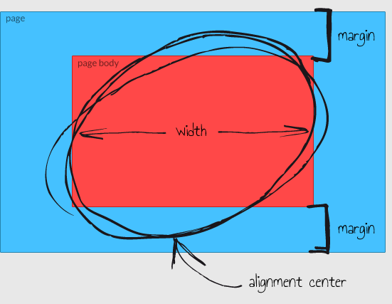
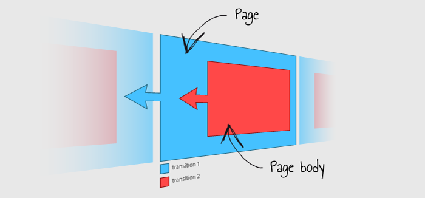

FSN - Fullscreen Site Navigation
Documentation
Created: 10/13/2012
By: Keepyourweb
Created: 10/13/2012
By: Keepyourweb
FSN (Fullscreen Site Navigation) is a JavaScript plugin that lets to build in the easy and quick way a fullscreen website.
Fullscreen website is a site that occupies the whole of the space inside of a browser window whichever it is: stretched or minimized.
FSN can be integrated into any cms or website template: it provides only the structure and the algorithm to make it work, the rest is on the designer hand.
So you can understand that it's very flexible and it adapts to any user requirement.
FSN is compatible with all browsers:
The plugin is contained in fsn folder.
Folder structure:
fsn/
|-- config.js // Configuration file
|-- plugin.js // Fsn plugin
|-- require-jquery.js // RequireJS 2.1.1 + jQuery 1.8.2 project
Copy and paste the fsn folder into your project.
To include the plugin just insert the following line code into your document <head>.
<!-- fsn plugin --> <script data-main="fsn/plugin" src="fsn/require-jquery.js"></script>
In the attribute data-main put the plugin.js file path.
FSN use the AMD library (Asynchronous Module Definition) Require.js in combination with jQuery, more information at this link http://requirejs.org/docs/jquery.html.
Before start you should know that FSN structure is divided into multiple sections, every section contains one or more pages which in turn will take the window resolution.
The site is navigable vertically between sections and horizontally between pages.
First of all create the fsn wrap in the <body>.
It will be the container of the whole FSN structure composed of sections and pages.
<!-- fsn wrap --> <div id="fsn" style="visibility: hidden"> ... </div>
The visibility style is set to hidden to hide the javascript loading delay before it renders the content.
At this point divide the fsn wrap in sections.
Section is the element that will contain the pages.
Use html5 <section> tag for every section that you want, like this:
<!-- fsn section --> <section> ... </section>
Done this insert the pages into sections.
Page is the element that will contain the content visible to the final user.
Use html5 <article> tag for every page that you want, like this:
<!-- fsn page --> <article> ... </article>
Here how will be the basic structure:
<!DOCTYPE html> <html> <head> <!-- fsn plugin --> <script data-main="fsn/plugin" src="fsn/require-jquery.js"></script> </head> <body> <!-- fsn wrap --> <div id="fsn" style="visibility: hidden"> <!-- fsn section --> <section> <!-- fsn page --> <article> <p>Content - Section 1 Page 1</p> </article> <!-- fsn page --> <article> <p>Content - Section 1 Page 2</p> </article> </section> <!-- fsn section --> <section> <!-- fsn page --> <article> <p>Content - Section 2 Page 1</p> </article> <!-- fsn page --> <article> <p>Content - Section 2 Page 2</p> </article> </section> </div> </body> </html>
Bar is a fixed element always visible on the window sides.
It is not possible to insert more than one bar.
To insert the bar use the html5 <header> tag and put it on the top of the fsn-wrap, like this:
<!-- fsn wrap --> <div id="fsn" style="visibility: hidden"> <!-- fsn bar --> <header> ... </header> ...
Bar is useful to insert the logo or the main menu.
For bar style you can use its class fsn-bar.
Bar is an independent element and can be placed into any window side, that is manages by configuration file.
Position accepts four values:
Bar can be placed over the content by setting floating: true on the config file.
To set bar open the configuration file fsn/config.js.
Here the settings list.
| option | accepted values | description |
|---|---|---|
| bar | position | [top, right, bottom, left] | Bar position on the window sides |
| bar | floating | [true, false] | Set the bar behavior, if set true it will be over the content |
Section is the element that contains the pages.
You can think about section as the parent that groups all pages of the same family.
To create a section use the html5 <section> tag and insert it into the fsn wrap.
<!-- fsn section --> <section data-title="products"> ... </section>
You can create endless sections.
Attributes provide additional information about sections, the sintax is data-[property]="value".
| attribute | example | description |
|---|---|---|
| data-title | <section data-title="Products"> ... </section> |
Section title, value that will use to create the menu |
| data-menu | <section data-menu="false"> ... </section> |
If set to false, the section will be not appear on the menu |
Page is the final element of the FSN structure.
Page is responsive, it takes the window resolution and adapts to the changes when it is resized.
To create a page use the html5 <article> tag and insert it into its section parent.
<!-- fsn section -->
<section data-title="products">
<!-- fsn page -->
<article data-title="iPhone" data-link="apple-iphone">
<p>The iPhone is a line of smartphones designed and marketed...</p>
</article>
...
</section>
You can create endless pages.
The image below represents how is composed the layout page:
You can set the layout page by the configuration file. See page settings.
Each page has its own link which is set by the attribute data-link, like this:
<article data-link="apple-iphone"> ... </article>
This means that you can surf the site simply putting the link in the address bar or create text link to reach the page, like this:
<a title="Apple iPhone" href="http://www.yourdomain.net/#apple-iphone">iPhone</a>
If you don't set the link, FSN will do it automatically with this rule: link="p[section_index][page_index]"
To load external contents via ajax use the attribute data-ajax putting the document path that you want, like this:
<article data-link="apple-iphone" data-ajax="pages/apple-iphone.html"></article>
The whole page content will be replaced with the ajax content.
During the loading content is shown a loader in the middle of the page. You can set the loader color (black or white) from the configuration file.
Through the attribute data-background you can set a background for the page, it accepts three value types:
Hex Color - If you want a background color put the color hex value.
<article data-background="#ff9900"> ... </article>
Pattern - If you want a background pattern put the image path.
<article data-background="images/pattern.png"> ... </article>
Image - if you want an image which adapt itself to the page size put the image path preceded by fullscreen:.
<article data-background="fullscreen:images/image.jpg"> ... </article>
FSN waits until the image is loaded before showing it.
FSN lets to customize the scrollbars providing a rich collection of options.
FSN integrates jScrollPane, a cross-browser and cross-device library which converts the default browser scrollbars into a customizable HTML structure.
In configuration file you can choose if the page can be scrollable or not by using the option pageScroll.
In the first case the page will behave as a normal web page, in fact it will have a custom scrollbar on the right side of the window with which you can scroll all its content.
In second case the page will not have any scrollbar but the page body, that is the wrapper of the content, will take the window height.
To make the page scrollable open the configuration file and set scrollPage: true.
Is possible also to have indipendent scrollable blocks inside the page, thus insert a div with class fsn-scroll like this:
<article data-link="company">
<div class="fsn-scroll" data-height="200">
...text...
</div>
</article>
The attribute data-height is needful to manage the div height, it accepts two types value:
The percentage is computable only if the page is fixed and has its own height, so set scrollPage: false.
Here an example of two responsive and scrollable blocks:
<article data-link="company">
<div class="fsn-scroll" data-height="40%">
...text...
</div>
<div class="fsn-scroll" data-height="60%">
...text...
</div>
</article>
To style the scrollbar open the configuration file fsn/config.js.
Here the settings list.
Track:
| option | accepted values | description |
|---|---|---|
| scrollbar | track | width | *number* | Total scrollbar width |
| scrollbar | track | padding | *number* | Padding between track and cursor |
| scrollbar | track | margin | *number* | Margin between content and scrollbar |
| scrollbar | track | background | *hex color* | Track background color |
| scrollbar | track | borderRadius | *number* | Radius for rounded corners |
Cursor:
| option | accepted values | description |
|---|---|---|
| scrollbar | cursor | background | *hex color* | Cursor background color |
| scrollbar | cursor | borderWidth | *number* | Cursor border width |
| scrollbar | cursor | borderColor | *hex color* | Cursor border color |
| scrollbar | cursor | borderRadius | *number* | Radius for rounded corners |
| scrollbar | cursor | opacity | [0-1] | Cursor opacity |
The navigation between one page and the other entail two transition, as rapresented below:
The first transition, the blue block, is the page shift, whereas the second transition, the red block, is the page body shift or rather its content shift.
In this way you can manage the two transitions separately, then create delays and smooth effects...the possibilities are endless!
Thanks of a rich easing effects collection you can create all kind of transitions that you want.
FSN integrates jQuery Easing, a jQuery plugin to give advanced easing options.
The transitions are managed by the configuration file. See page settings.
Attributes provide additional information about pages, the sintax is data-[property]="value".
| attribute | example | description |
|---|---|---|
| data-title | <article data-title="Mission"> ... </article> |
Page title, value that will use to create the menu |
| data-link | <article data-link="mission"> ... </article> |
Page link |
| data-ajax | <article data-ajax="pages/mission.html"> ... </article> |
Document path to load via ajax |
| data-background | <article data-background="#ff0000"> ... </article> |
Page background |
| data-menu | <article data-menu="false"> ... </article> |
If set to false, the page will be not appear on the menu |
To set page open the configuration file fsn/config.js.
Here the settings list.
| option | accepted values | description |
|---|---|---|
| pages | width | *number* | Page body width in pixel, 0 to set width 100% |
| pages | alignment | [left, center, right] | Page body alignment relative to the page |
| pages | margin | *number* | Top and bottom margin between the page and the page body |
| pages | scrollPage | [true, false] | Enable/Disable the page scroll |
| pages | speed | *number* | Speed of the page transition |
| pages | easing | [jswing, def, easeInQuad, easeOutQuad, easeInOutQuad, easeInCubic, easeOutCubic, easeInOutCubic, easeInQuart, easeOutQuart, easeInOutQuart, easeInQuint, easeOutQuint, easeInOutQuint, easeInSine, easeOutSine, easeInOutSine, easeInExpo, easeOutExpo, easeInOutExpo, easeInCirc, easeOutCirc, easeInOutCirc, easeInElastic, easeOutElastic, easeInOutElastic, easeInBack, easeOutBack, easeInOutBack, easeInBounce, easeOutBounce, easeInOutBounce] | Animation easing of the page transition |
| pages | loader | [white, black] | Ajax loader color |
| pages | animationBody | enable | [true, false] | Enable/Disable the page body transition |
| pages | animationBody | shift | *number* | Shift of the page body transition |
| pages | animationBody | delay | *number* | Delay of the page body transition relative to the page transition speed |
| pages | animationBody | easing | [jswing, def, easeInQuad, easeOutQuad, easeInOutQuad, easeInCubic, easeOutCubic, easeInOutCubic, easeInQuart, easeOutQuart, easeInOutQuart, easeInQuint, easeOutQuint, easeInOutQuint, easeInSine, easeOutSine, easeInOutSine, easeInExpo, easeOutExpo, easeInOutExpo, easeInCirc, easeOutCirc, easeInOutCirc, easeInElastic, easeOutElastic, easeInOutElastic, easeInBack, easeOutBack, easeInOutBack, easeInBounce, easeOutBounce, easeInOutBounce] | Animation easing of the page body transition |
Footer is a fixed element always visible on the bottom window side.
It is not possible to insert more than one footer.
To insert the footer use the html5 <footer> tag and put it on the bottom of the fsn-wrap, like this:
<!-- fsn wrap --> <div id="fsn" style="visibility: hidden"> ... <!-- fsn footer --> <footer> ... </footer> </div>
Footer is useful to insert company information, credits, links...
For footer style you can use its class fsn-footer.
FSN integrates a dynamic menu system, it can creates autonomously the menu tree on the basis of the sections and pages present.
To create a menu use the html5 <nav> tag.
<!-- fsn bar --> <header> <!-- fsn menu --> <nav data-menu="section:all;level:all"></nav> </header>
The menu is configurable through the attribute data-menu, the syntax is:
data-menu="section:[option];level:[option]"
As you can see to make a menu is needful to set two value on data-menu:
section indicates to FSN which sections read, it accepts three options:
level indicates to FSN the menu level, it accepts three options:
You can insert menu only on bar, footer and page elements.
The final result will be:
<nav data-menu="section:all;level:all"> <!-- CODE PRODUCED BY by FSN --> <ul class="fsn-menu-family fsn-level-1"> <li class="fsn-menu-item fsn-level-1 fsn-first"> <span style="cursor: pointer;">Company</span> <ul class="fsn-menu-family fsn-level-2"> <li class="fsn-menu-item fsn-level-2 fsn-first"> <span style="cursor: pointer;">Mission</span> </li> <li class="fsn-menu-item fsn-level-2"> <span style="cursor: pointer;">About Us</span> </li> <li class="fsn-menu-item fsn-level-2 fsn-last"> <span style="cursor: pointer;">Team</span> </li> </ul> </li> <li class="fsn-menu-item fsn-level-1 fsn-last"> <span style="cursor: pointer;">Products</span> <ul class="fsn-menu-family fsn-level-2"> <li class="fsn-menu-item fsn-level-2 fsn-first"> <span style="cursor: pointer;">iPhone</span> </li> <li class="fsn-menu-item fsn-level-2"> <span style="cursor: pointer;">iPad</span> </li> <li class="fsn-menu-item fsn-level-2 fsn-last"> <span style="cursor: pointer;">iMac</span> </li> </ul> </li> </ul> </nav>
Current item has class fsn-current.
Set the data-menu attribute to false on each page or section that you want exclude from the menu, here an example:
<article data-title="iPhone" data-link="apple-iphone" data-menu="false"> ... </article>
This page will be not appear on the menu.
By default the menu item is a <span> element:
<span style="cursor: pointer;">Company</span>
To create a custom item menu, insert in the attribute data-item the html code that you want, here an example:
<nav data-menu="section:all;level:1" data-item="<a href='#' class='item-{{link}}'>Menu - {{title}}</a>"></nav>
data-item accepts two variables:
Now the final result will be:
<nav data-menu="section:all;level:1" data-item="<a href='#' class='item-{{link}}'>Menu - {{title}}</a>">
<!-- CODE PRODUCED BY by FSN -->
<ul class="fsn-menu-family fsn-level-1">
<li class="fsn-menu-item fsn-level-1 fsn-first">
<a style="cursor: pointer;" href="#" class="item-company" >Menu - Company</a>
</li>
<li class="fsn-menu-item fsn-level-1 fsn-last">
<a style="cursor: pointer;" href="#" class="item-products" >Menu - Products</a>
</li>
</ul>
</nav>
Note also, compared to the previous example, that it was printed only the section level, infact level is set to 1.
| attribute | example | description |
|---|---|---|
| data-menu | <nav data-menu="section:this;level:2"></nav> |
To set menu |
| data-item | <nav data-menu="section:all;level:all" data-item="<span><img src="arrow.png" />{{title}}</span>"></nav> |
To create custum item menu |
FSN lets to surf also with the keyboard arrows for a higher user experience. Use the right and left arrows to surf between pages, up and down arrows to surf between sections.
To manage keyboard navigation open the configuration file fsn/config.js.
Here the settings list.
| option | accepted values | description |
|---|---|---|
| controllers | keyboard | enable | [true, false] | Enable/Disable the keyboard navigation |
Arrows are two buttons on the right and left window sides created automatically by FSN that let to surf between pages.
Arrows being on the window sides have the ability to hide themselves if the window is too small, this to avoid going over the page content..
An example of code produced by FSN:
<div class="left fsn-navigation-arrow"><div> <!-- left arrow --> <div class="right fsn-navigation-arrow"><div> <!-- right arrow -->
To manage arrows navigation open the configuration file fsn/config.js.
Here the settings list.
| option | accepted values | description |
|---|---|---|
| controllers | arrows | enable | [true, false] | Enable/Disable the arrows navigation |
| controllers | arrows | visibilityControl | [true, false] | Enable/Disable the ability to hide themselves if the window is too small |
| controllers | arrows | position | [top, center, bottom] | Arrows position on the window sides |
| controllers | arrows | width | *number* | Arrows width |
| controllers | arrows | height | *number* | Arrows height |
| controllers | arrows | marginWindow | *number* | Margin from the window side |
Dot buttons are elements created automatically by FSN on the window sides and let you to track the current page (or section) and surf between them.
An example of code produced by FSN:
<div class="fsn-dots"> <div title="Mission" class="fsn-dots-item fsn-current"></div> <div title="About Us" class="fsn-dots-item"></div> <div title="Team" class="fsn-dots-item"></div> </div>
Current dot has class fsn-current.
To manage dot buttons navigation open the configuration file fsn/config.js.
Here the settings list.
Sections dots
| option | accepted values | description |
|---|---|---|
| controllers | dots | sections | enable | [true, false] | Enable/Disable buttons for sections |
| controllers | dots | sections | visibilityControl | [true, false] | Enable/Disable the ability to hide themselves if the window is too small |
| controllers | dots | sections | position | [topleft, centerleft, bottomleft, topright, centerright, bottomright] | Dots position on window sides |
| controllers | dots | sections | side | *number* | Width and Height of the dots |
| controllers | dots | sections | margin | *number* | Margin between dots |
| controllers | dots | sections | marginWindow | *number* | Margin from the window side |
Pages dots
| option | accepted values | description |
|---|---|---|
| controllers | dots | pages | enable | [true, false] | Enable/Disable dot buttons for pages |
| controllers | dots | pages | position | [topleft, topcenter, topright, bottomleft, bottomcenter, bottomright] | Dots position on window sides |
| controllers | dots | pages | side | *number* | Width and Height of the dots |
| controllers | dots | pages | margin | *number* | Margin between dots |
| controllers | dots | pages | marginWindow | *number* | Margin from the window side |
Through events you can intercept some situations during the navigation on the site, such as fsn ready, page changed...
Here the complete events list at your disposal:
Event triggered when FSN is initialized, rendered and ready to be navigated.
$(function() {
$('#fsn').on('fsn-ready', function(e) {
console.log('FSN ready');
});
});
The handler passed to ready is guaranteed to be executed after FSN is ready, so this is usually the best place to attach all other event handlers and run other jQuery code.
Event triggered when the current page was changed.
$(function() {
$('#fsn').on('fsn-pageChanged', function(e, $page) {
console.log('Page changed');
});
});
Event triggered when the current section was changed.
$(function() {
$('#fsn').on('fsn-sectionChanged', function(e, $section) {
console.log('section changed');
});
});
Event triggered when a page is initialized and all ajax contents are loaded.
$(function() {
// <article id="mission" data-title="mission"...
$('#mission').on('fsn-ready', function(e, $page) {
console.log('page mission ready');
});
});
Event triggered when a page becomes current.
$(function() {
// <article id="mission" data-title="Mission"...
$('#mission').on('fsn-setCurrent', function(e, $page) {
console.log('page mission set current');
});
});
Event triggered when a page becomes current and completes its transition.
$(function() {
// <article id="mission" data-title="Mission"...
$('#mission').on('fsn-current', function(e, $page) {
console.log('page mission is current');
});
});
Event triggered when a page is no more current.
$(function() {
// <article id="mission" data-title="Mission"...
$('#mission').on('fsn-noCurrent', function(e, $page) {
console.log('page mission no more current');
});
});
Event triggered when a section becomes current.
$(function() {
// <section id="company" data-title="Company"...
$('#company').on('fsn-setCurrent', function(e, $section) {
console.log('section company set current');
});
});
Event triggered when a section becomes current and completes its transition.
$(function() {
// <section id="company" data-title="Company"...
$('#company').on('fsn-current', function(e, $section) {
console.log('section company is current');
});
});
Event triggered when a section is no more current.
$(function() {
// <section id="company" data-title="Company"...
$('#company').on('fsn-noCurrent', function(e, $section) {
console.log('section company no more current');
});
});
FSN can work perfectly with all jQuery plugins, once it is ready.
So, just wrap the plugin call in this way:
$(function() {
$('#fsn').on('fsn-ready', function(e) {
// This will be execute once FSN will be ready.
$('#slideshow').startSlideshow();
});
});
Another Example:
$(function() {
$('#fsn').on('fsn-ready', function(e) {
// Also page and section events require FSN ready.
$('#mission').on('fsn-current', function(e, $page) {
console.log('page mission is current');
});
});
});
FSN warns the IE6 users that their browser is obsolete and recommends them to update it to enjoy the best browsing experience.
To set IE6 Alert open the configuration file fsn/config.js.
Here the settings list.
| option | accepted values | description |
|---|---|---|
| ie6Alert | enable | [true, false] | Enable/Disable IE6 Alert |